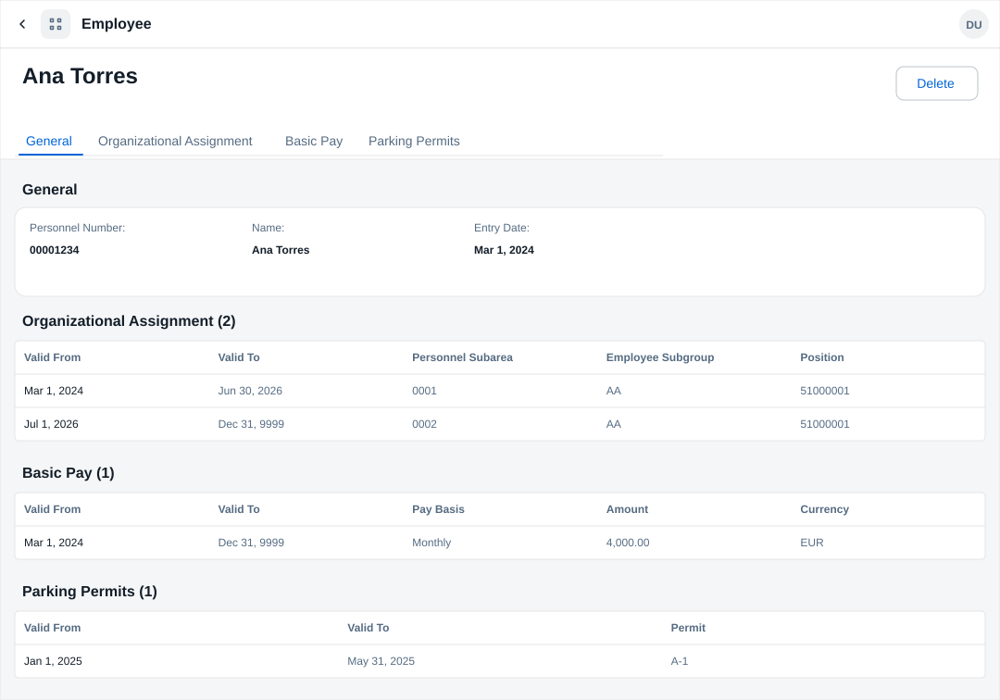
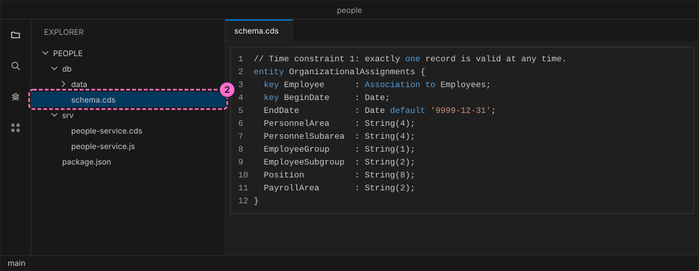
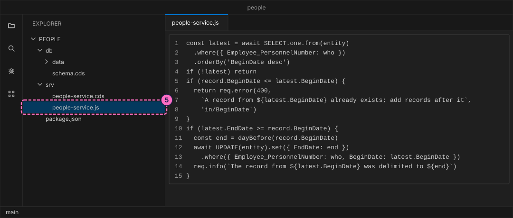
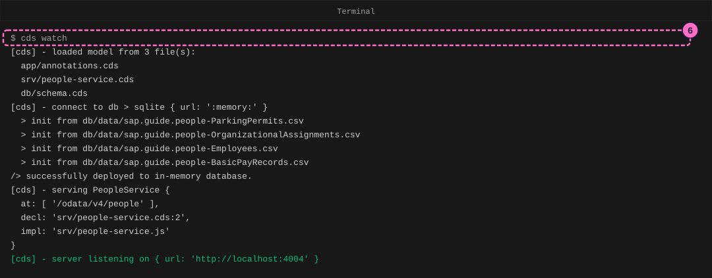
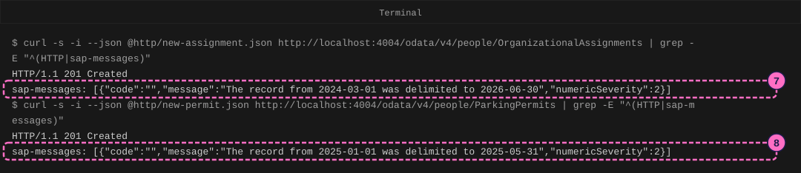
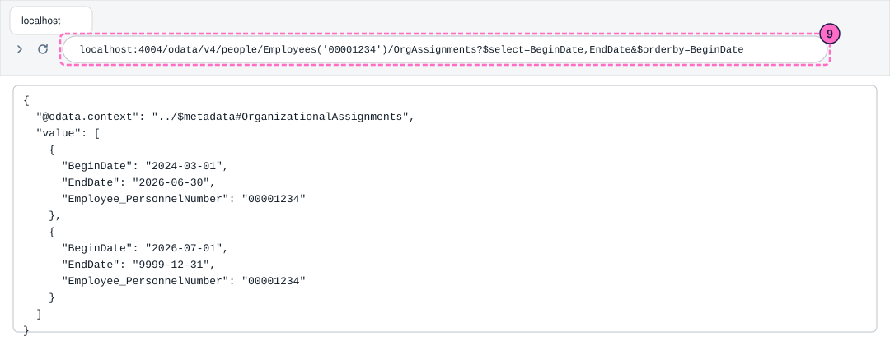
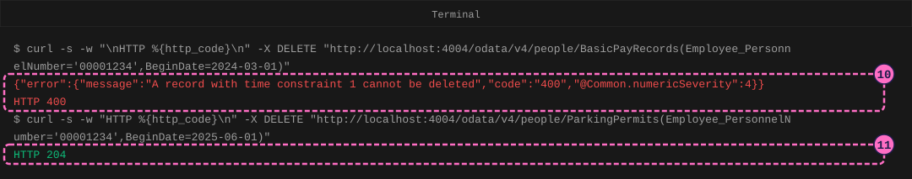
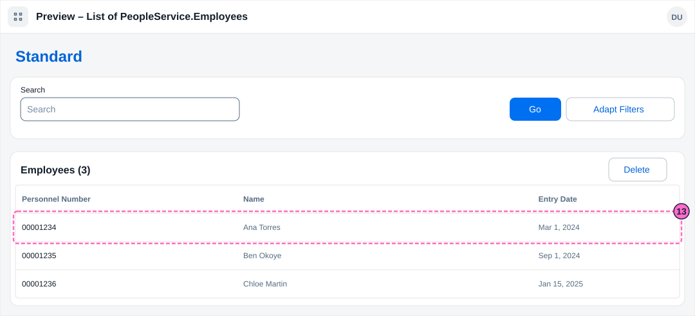

SAP HR Guide: Model Employee Records with Validity Periods
|
This content was generated with the assistance of AI and should be verified against the official documentation before being relied on in production. |
Checked on 2026-11-13 against CAP Node.js 10.2 (@sap/cds 10.2.2, @sap/cds-dk 10.2.1), the Fiori elements preview of cds watch (SAPUI5 1.145.0), curl 8.7 and Node.js 24.21.
What you build
This is a teaching model built with CAP. It is not SAP S/4HANA or SAP SuccessFactors and does not reproduce their screens.
You build a small model of employee records that are valid for a period, the idea behind the infotypes of SAP HR. An organizational assignment and a basic pay record each have a begin date and an end date. They follow time constraint 1: exactly one record is valid on any day. A parking permit (a record of this model’s own, not an SAP infotype) follows time constraint 2: at most one record is valid, and gaps are allowed. When you add a record, the model sets the end date of the previous record to the day before the new begin date, which SAP calls delimiting. A record of time constraint 1 cannot be deleted, one of time constraint 2 can. You read the history of an employee in the browser and in a Fiori elements object page.

Before you start
-
No account is needed: the CAP tools and curl install without signing in. Installing
@sap/cds-dkmeans accepting the SAP Developer License Agreement, version 3.2, which the lab README names. -
Do the guide Your First CAP Service first (it explains
cds init, CDS files, CSV data andcds watch) and, for the object page, the guide Add a Fiori Elements App to a CAP Service. -
Read Infotypes, Time Constraints and Validity Periods and HR and Payroll Basics for the ideas that the model copies.
-
You need curl 7.82 or newer, which has the option
--json.curl --versionprints the version. -
The example is the one of the HR pages: Example Trading Co., personnel area
EX01, and the employees Ana Torres00001234, Ben Okoye00001235and Chloe Martin00001236. All codes and dates are invented example values, not values delivered by SAP. Dates in the model are writtenYYYY-MM-DD, as in code; the SAP screens of the reference pages showDD.MM.YYYY, so 01.07.2026 is2026-07-01. The high date 31.12.9999 is9999-12-31. -
The change you make to Ana’s organizational assignment, from 01.07.2026, extends the example: it moves her from personnel subarea
0001to0002, and the reason is made up. The parking permits also extend the example. -
The figures are drawings of the editor, the terminal, the browser and the Fiori pages, not screenshots. A highlighted box with a number marks the file, the line or the page part of the step with the same number.
Steps
Create the project and model the records
-
Create a CAP project named
peopleand install it, as in the first guide:cds init people --nodejs cd people npm install -
Create
db/schema.cds.Employeesholds one row per personnel number. Each record entity has the employee and theBeginDateas its key, so an employee can have many records, told apart by their begin date, and anEndDatethat defaults to the high date9999-12-31, a record without a planned end. The comments say which time constraint each entity follows.namespace sap.guide.people; // A teaching model of infotype-style employee records, not SAP S/4HANA and not // SAP SuccessFactors. Names, numbers and dates are invented example values. entity Employees { key PersonnelNumber : String(8); Name : String(40); EntryDate : Date; OrgAssignments : Composition of many OrganizationalAssignments on OrgAssignments.Employee = $self; BasicPay : Composition of many BasicPayRecords on BasicPay.Employee = $self; ParkingPermits : Composition of many ParkingPermits on ParkingPermits.Employee = $self; } // Time constraint 1: exactly one record is valid at any time. entity OrganizationalAssignments { key Employee : Association to Employees; key BeginDate : Date; EndDate : Date default '9999-12-31'; PersonnelArea : String(4); PersonnelSubarea : String(4); EmployeeGroup : String(1); EmployeeSubgroup : String(2); Position : String(8); PayrollArea : String(2); } // Time constraint 1 as well. entity BasicPayRecords { key Employee : Association to Employees; key BeginDate : Date; EndDate : Date default '9999-12-31'; PayBasis : String(10); Amount : Decimal(9,2); Currency : String(3) default 'EUR'; } // Time constraint 2: at most one record is valid at any time; gaps are allowed. // A record of the model's own, not an SAP infotype. entity ParkingPermits { key Employee : Association to Employees; key BeginDate : Date; EndDate : Date default '9999-12-31'; Permit : String(10); }
-
Create the four CSV files in
db/data. They hold the three employees with one open-ended organizational assignment and basic pay record each (Ana 4,000.00 EUR a month, Ben 2,400.00 EUR a month, Chloe 14.00 EUR an hour) and one parking permit of Ana from2025-01-01:PersonnelNumber,Name,EntryDate 00001234,Ana Torres,2024-03-01 00001235,Ben Okoye,2024-09-01 00001236,Chloe Martin,2025-01-15Employee_PersonnelNumber,BeginDate,EndDate,PersonnelArea,PersonnelSubarea,EmployeeGroup,EmployeeSubgroup,Position,PayrollArea 00001234,2024-03-01,9999-12-31,EX01,0001,1,AA,51000001,E1 00001235,2024-09-01,9999-12-31,EX01,0001,1,AA,51000002,E1 00001236,2025-01-15,9999-12-31,EX01,0002,1,AB,51000003,E1Employee_PersonnelNumber,BeginDate,EndDate,PayBasis,Amount,Currency 00001234,2024-03-01,9999-12-31,Monthly,4000.00,EUR 00001235,2024-09-01,9999-12-31,Monthly,2400.00,EUR 00001236,2025-01-15,9999-12-31,Hourly,14.00,EUREmployee_PersonnelNumber,BeginDate,EndDate,Permit 00001234,2025-01-01,9999-12-31,A-1
Write the delimitation rules
-
Create
srv/people-service.cds. It exposes the four entities as an OData service:using { sap.guide.people as db } from '../db/schema'; service PeopleService { entity Employees as projection on db.Employees; entity OrganizationalAssignments as projection on db.OrganizationalAssignments; entity BasicPayRecords as projection on db.BasicPayRecords; entity ParkingPermits as projection on db.ParkingPermits; } -
Create
srv/people-service.js. The functiondelimitOnCreateruns before a record is created. It looks up the latest record of the employee. A new record must begin after it. If the latest record is still valid on the new begin date, its end date is set to the day before, and the service issues a message. This is the delimitation of time constraint 1 and 2. The second block makes the difference between the two constraints: a record of time constraint 1 must exist at all times, so deleting one is rejected.import cds from '@sap/cds' const HIGH_DATE = '9999-12-31' // The day before a date, as YYYY-MM-DD (UTC, so daylight saving time cannot // move the date). const dayBefore = (date) => { const d = new Date(`${date}T00:00:00Z`) d.setUTCDate(d.getUTCDate() - 1) return d.toISOString().slice(0, 10) } export default class PeopleService extends cds.ApplicationService { init() { const { OrganizationalAssignments, BasicPayRecords, ParkingPermits } = this.entities const timeConstraint1 = [OrganizationalAssignments, BasicPayRecords] const timeConstraint2 = [ParkingPermits] // Creating a record ends the record that is valid on its start date: the // end date of the old record becomes the new start date minus one day. const delimitOnCreate = (entity) => async (req) => { const record = req.data const who = record.Employee_PersonnelNumber record.EndDate ??= HIGH_DATE if (record.EndDate < record.BeginDate) { return req.error(400, 'The end date must not be before the begin date', 'in/EndDate') } const latest = await SELECT.one.from(entity) .where({ Employee_PersonnelNumber: who }) .orderBy('BeginDate desc') if (!latest) return if (record.BeginDate <= latest.BeginDate) { return req.error(400, `A record from ${latest.BeginDate} already exists; add records after it`, 'in/BeginDate') } if (latest.EndDate >= record.BeginDate) { const end = dayBefore(record.BeginDate) await UPDATE(entity).set({ EndDate: end }) .where({ Employee_PersonnelNumber: who, BeginDate: latest.BeginDate }) req.info(`The record from ${latest.BeginDate} was delimited to ${end}`) } } for (const entity of [...timeConstraint1, ...timeConstraint2]) { this.before('CREATE', entity, delimitOnCreate(entity)) } // Time constraint 1: a record must exist at all times, so it cannot be // deleted. for (const entity of timeConstraint1) { this.before('DELETE', entity, (req) => req.error(400, 'A record with time constraint 1 cannot be deleted')) } return super.init() } }
Start the service and add records
-
In the terminal, in the project folder, start the server. The log shows the four CSV files loaded and
PeopleServiceserved at/odata/v4/peoplewith the implementationsrv/people-service.js.cds watch
-
Create the folder
httpand in itnew-assignment.json, Ana’s new organizational assignment from2026-07-01:{ "Employee_PersonnelNumber": "00001234", "BeginDate": "2026-07-01", "PersonnelArea": "EX01", "PersonnelSubarea": "0002", "EmployeeGroup": "1", "EmployeeSubgroup": "AA", "Position": "51000001", "PayrollArea": "E1" }Open a second terminal in the project folder and post it. The option
--jsonsets the content type;-iprints the response headers, andgrepkeeps the status line and the message header:curl -s -i --json @http/new-assignment.json http://localhost:4004/odata/v4/people/OrganizationalAssignments | grep -E "^(HTTP|sap-messages)"The answer is
HTTP/1.1 201 Createdand a message:The record from 2024-03-01 was delimited to 2026-06-30. The service ended Ana’s first record on the day before the new one began. -
Do the same for the parking permit, time constraint 2. Create
http/new-permit.json, a permitB-2from2025-06-01, and post it toParkingPermits. The message isThe record from 2025-01-01 was delimited to 2025-05-31.{ "Employee_PersonnelNumber": "00001234", "BeginDate": "2025-06-01", "Permit": "B-2" }curl -s -i --json @http/new-permit.json http://localhost:4004/odata/v4/people/ParkingPermits | grep -E "^(HTTP|sap-messages)"
-
Read the history of Ana’s organizational assignment. Open http://localhost:4004/odata/v4/people/Employees('00001234')/OrgAssignments?$select=BeginDate,EndDate&$orderby=BeginDate in the browser. There are two records, from
2024-03-01to2026-06-30and from2026-07-01to9999-12-31. They touch and never overlap: on every day since the hiring, exactly one record is valid. This is time constraint 1.
-
Try to delete Ana’s basic pay record. The service answers
A record with time constraint 1 cannot be deletedwith HTTP 400, because a basic pay record must exist at all times. To end such a record, you create a new one that replaces it. -
Delete the parking permit
B-2instead. The answer isHTTP 204, no content: a record of time constraint 2 may be deleted. Ana’s first permit stays delimited to2025-05-31, so from2025-06-01she has no permit, a gap that time constraint 2 allows.curl -s -w "\nHTTP %{http_code}\n" -X DELETE "http://localhost:4004/odata/v4/people/BasicPayRecords(Employee_PersonnelNumber='00001234',BeginDate=2024-03-01)" curl -s -w "HTTP %{http_code}\n" -X DELETE "http://localhost:4004/odata/v4/people/ParkingPermits(Employee_PersonnelNumber='00001234',BeginDate=2025-06-01)"
Show the history in a Fiori elements page
-
Create
app/annotations.cds. The first part gives the fields their labels. The second builds a list report of employees and an object page with one section per record entity, each a table of the history:using PeopleService as service from '../srv/people-service'; annotate service.Employees with { PersonnelNumber @title : 'Personnel Number'; Name @title : 'Name'; EntryDate @title : 'Entry Date'; }; annotate service.OrganizationalAssignments with { BeginDate @title : 'Valid From'; EndDate @title : 'Valid To'; PersonnelArea @title : 'Personnel Area'; PersonnelSubarea @title : 'Personnel Subarea'; EmployeeSubgroup @title : 'Employee Subgroup'; Position @title : 'Position'; }; annotate service.BasicPayRecords with { BeginDate @title : 'Valid From'; EndDate @title : 'Valid To'; PayBasis @title : 'Pay Basis'; Amount @title : 'Amount'; Currency @title : 'Currency'; }; annotate service.ParkingPermits with { BeginDate @title : 'Valid From'; EndDate @title : 'Valid To'; Permit @title : 'Permit'; }; annotate service.Employees with @( UI.LineItem : [{ Value : PersonnelNumber }, { Value : Name }, { Value : EntryDate }], UI.HeaderInfo : { TypeName : 'Employee', TypeNamePlural : 'Employees', Title : { Value : Name } }, UI.Facets : [ { $Type : 'UI.ReferenceFacet', Label : 'General', Target : '@UI.FieldGroup#General' }, { $Type : 'UI.ReferenceFacet', Label : 'Organizational Assignment', Target : 'OrgAssignments/@UI.LineItem' }, { $Type : 'UI.ReferenceFacet', Label : 'Basic Pay', Target : 'BasicPay/@UI.LineItem' }, { $Type : 'UI.ReferenceFacet', Label : 'Parking Permits', Target : 'ParkingPermits/@UI.LineItem' } ], UI.FieldGroup #General : { Data : [{ Value : PersonnelNumber }, { Value : Name }, { Value : EntryDate }] } ); annotate service.OrganizationalAssignments with @( UI.LineItem : [{ Value : BeginDate }, { Value : EndDate }, { Value : PersonnelSubarea }, { Value : EmployeeSubgroup }, { Value : Position }] ); annotate service.BasicPayRecords with @( UI.LineItem : [{ Value : BeginDate }, { Value : EndDate }, { Value : PayBasis }, { Value : Amount }, { Value : Currency }] ); annotate service.ParkingPermits with @( UI.LineItem : [{ Value : BeginDate }, { Value : EndDate }, { Value : Permit }] ); -
Open http://localhost:4004/$fiori-preview/PeopleService/Employees?sap-language=EN#preview-app. The list report Employees (3) shows the three employees. The model has no drafts, so there is no Create button.

-
Click Ana Torres. The object page shows the tables of the history: Organizational Assignment (2) with the two records of step 9, Basic Pay (1) with 4,000.00 EUR a month, and Parking Permits (1) with the permit
A-1, valid from Jan 1, 2025 to May 31, 2025. The preview prints the dates asMar 1, 2024andDec 31, 9999.
Check the result
-
The two posts of steps 7 and 8 answer
HTTP/1.1 201 Createdwith a delimitation message each. -
The history of step 9 has no gap and no overlap.
-
The delete of the basic pay record answers HTTP 400, the delete of the permit HTTP 204.
-
The object page of Ana Torres shows Organizational Assignment (2).
Variations
-
Post an organizational assignment for Ana with a begin date before
2026-07-01, for example2026-01-01. The service answersA record from 2026-07-01 already exists; add records after it. The model only adds records after the latest one; SAP also lets you insert a record in the middle of the history, which this model leaves out. -
Post a record whose
EndDateis before itsBeginDate. The service answersThe end date must not be before the begin date.
What can go wrong
| Symptom | Cause | Fix |
|---|---|---|
|
The new begin date is not after the begin date of the latest record. |
Use a begin date after the latest record. |
|
You deleted a basic pay or organizational assignment record. |
Add a new record instead; deleting is only possible for time constraint 2 records such as the parking permit. |
|
The |
Correct the dates. |
Clean up
Press Ctrl+C in the terminal that runs cds watch. The database lives only in memory, so your changes are gone at the next start; the CSV files bring back the starting data.
Where to go next
-
Previous guides: Your First CAP Service and Add a Fiori Elements App to a CAP Service.
-
Reference: Infotypes.
-
Reference: Time Constraints and Validity Periods.
-
Reference: HR and Payroll Basics.